| Autor: | - |
|---|---|
| Série: | - |
| Pořadí: | - |
| Rok vydání: | - |
| Děj knihy: |
Knihy
Tyto knihy jsou přeloženy do češtiny ze ságy Warriors
Každá z hlavních sérií je označená odlišnou barvou než podsériové knihy.
Černé čáry označují časovou mezeru mezi knihami.
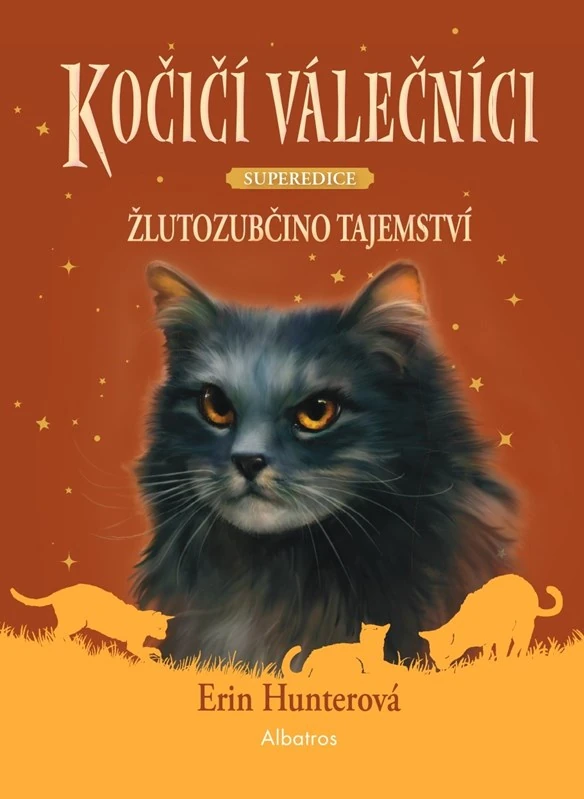
Kočičí válečníci – Super edice: Žlutozubčino tajemství

Kočičí válečníci – Super edice: Věštba Modré hvězdy
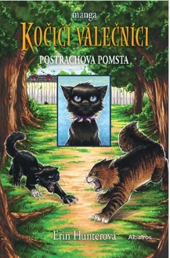
Kočičí válečníci – manga: Postrachova pomsta
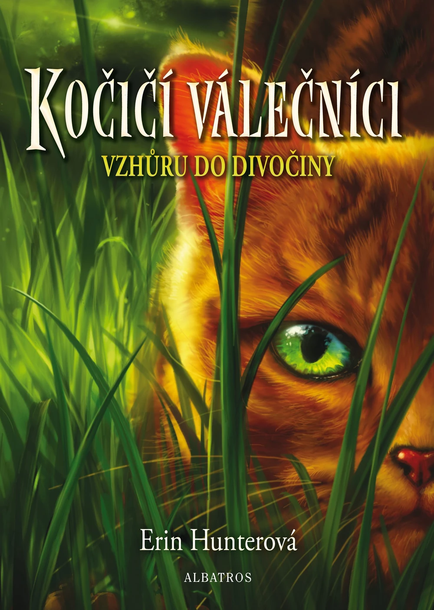
Kočičí válečníci: Vzhůru do divočiny

Kočičí válečníci: Oheň a led

Kočičí válečníci: Les tajemství

Kočičí válečníci: Bouře přichází

Kočičí válečníci: Nebezpečná stezka

Kočičí válečníci: Nejtemnější hodina
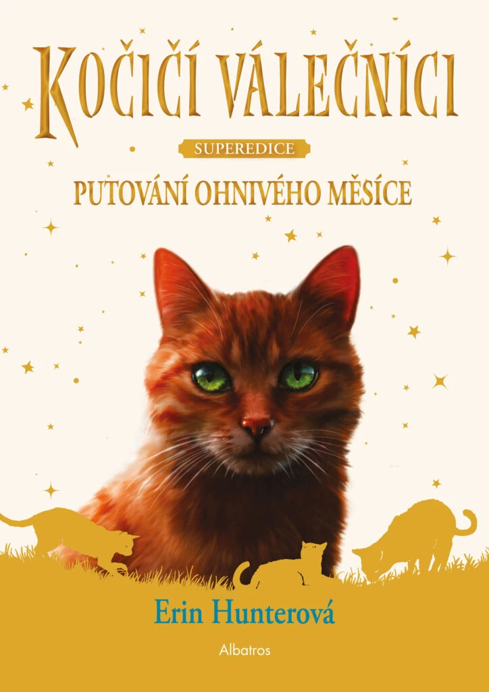
Kočičí válečníci – Super edice: Putování Ohnivého měsíce
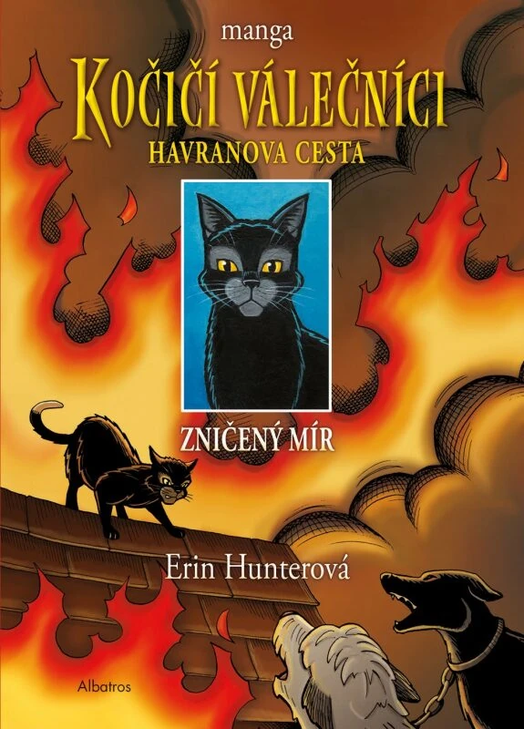
Kočičí válečníci – manga: Havranova cesta 1: Zlomený mír
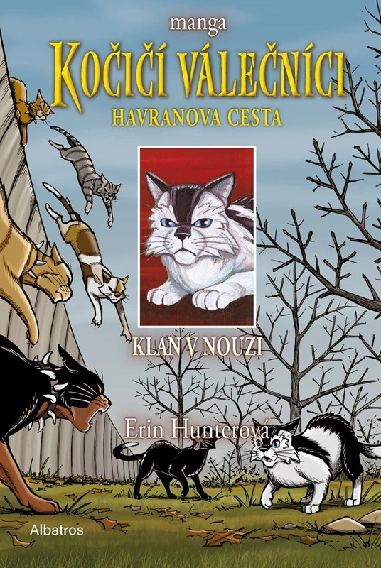
Kočičí válečníci – manga: Havranova cesta 2: Klan v nouzi
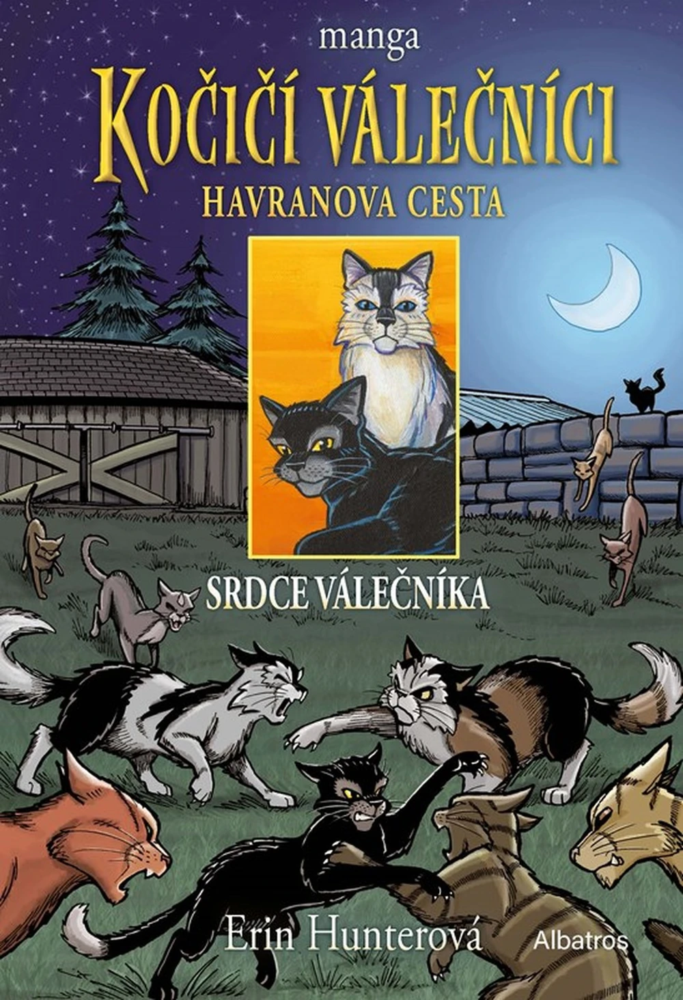
Kočičí válečníci – manga: Havranova cesta 3: Srdce válečníka
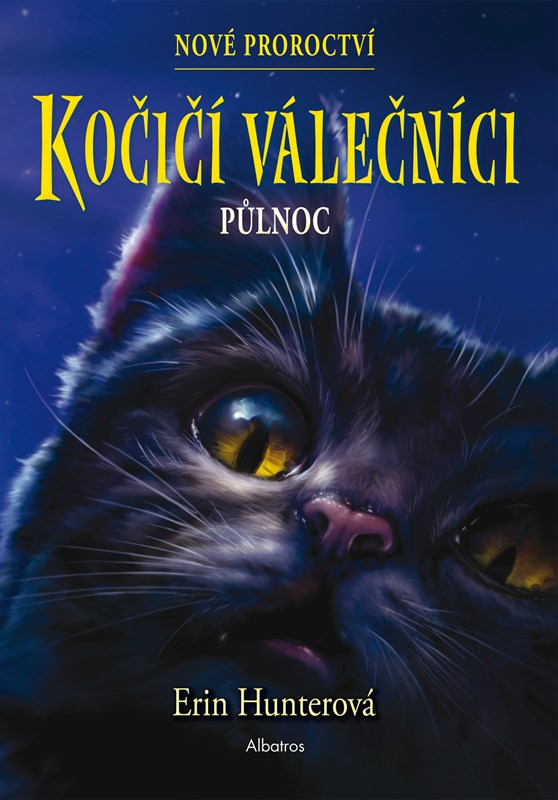
Kočičí válečníci: Půlnoc

Kočičí válečníci: Východ měsíce
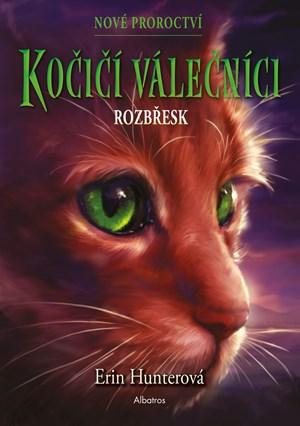
Kočičí válečníci: Rozbřesk
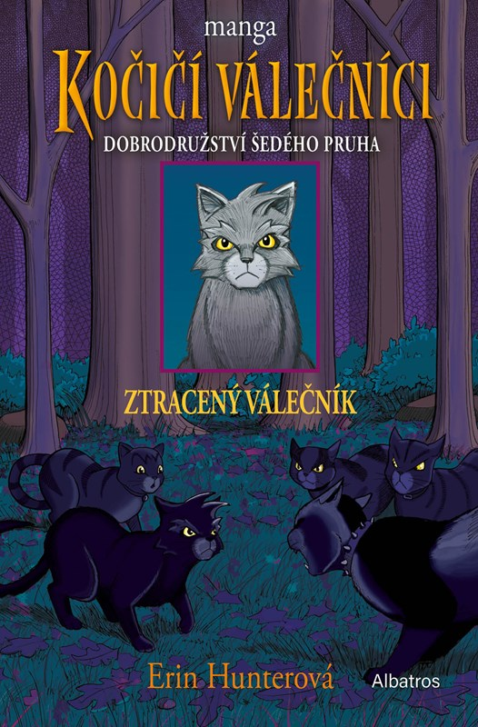
Kočičí válečníci – manga: Ztracený válečník
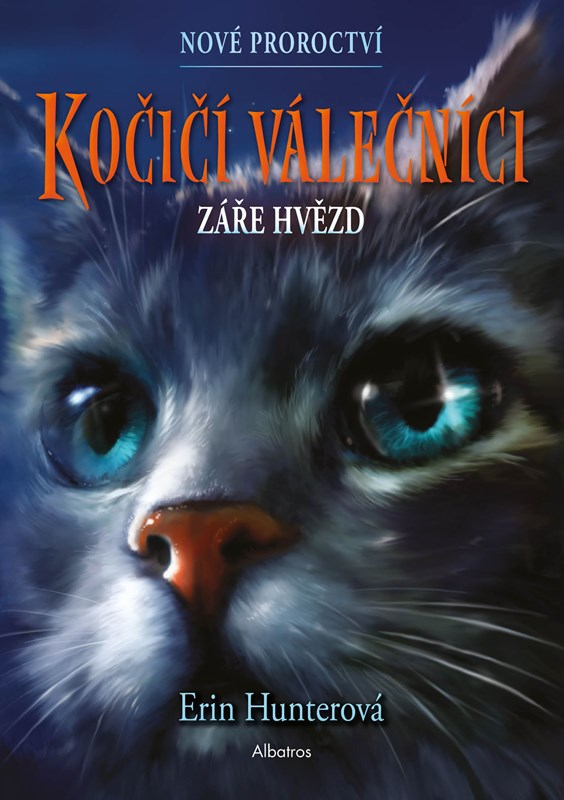
Kočičí válečníci: Záře hvězd
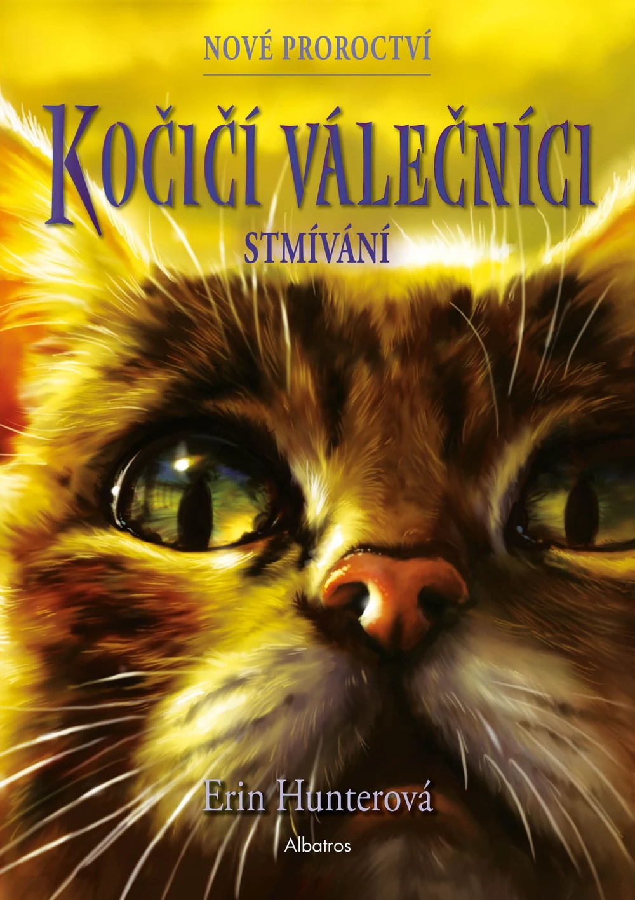
Kočičí válečníci: Stmívání

Kočičí válečníci: Západ slunce
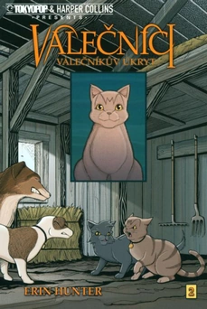
Kočičí válečníci – manga: Útočiště válečníka
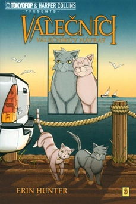
Kočičí válečníci – manga: Návrat válečníka
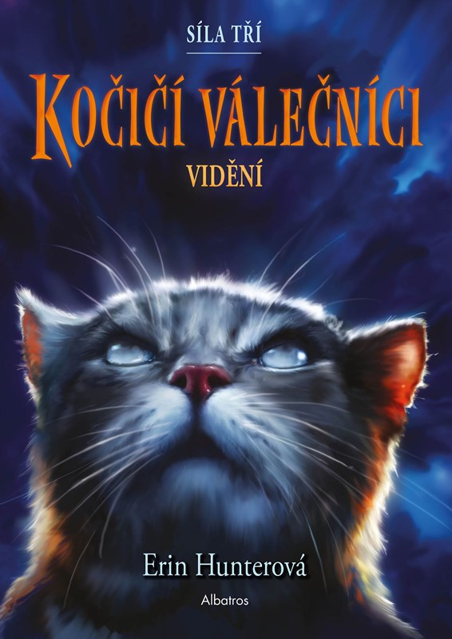
Kočičí válečníci: Vidění

Kočičí válečníci: Temná řeka
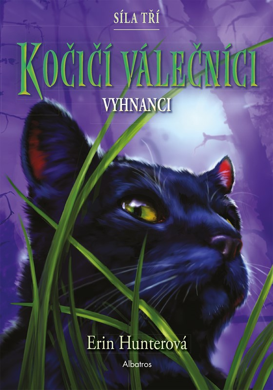
Kočičí válečníci: Vyhnanci
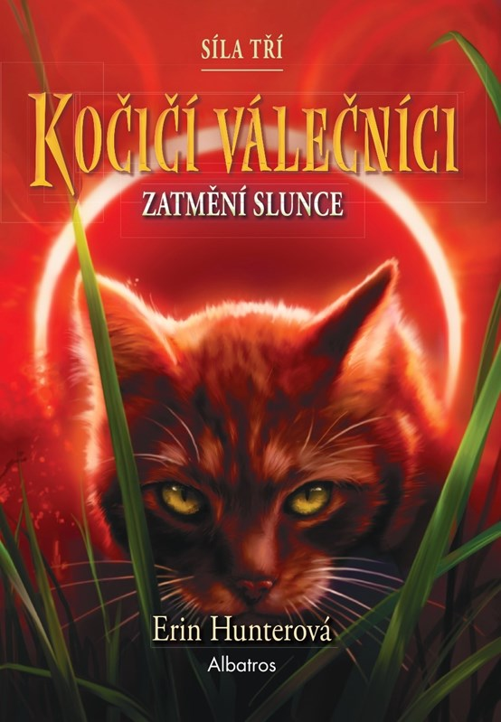
Kočičí válečníci: Zatmění
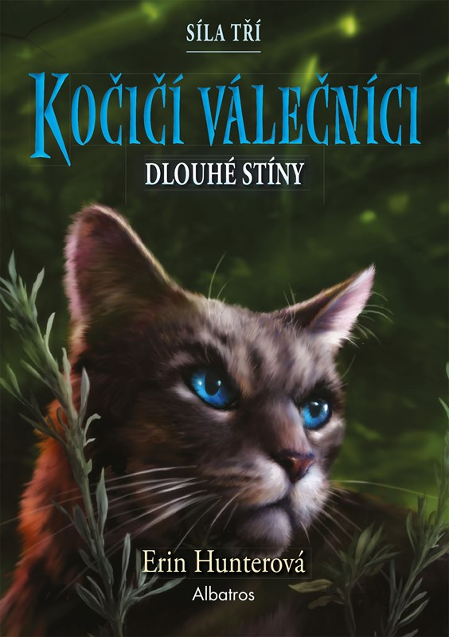
Kočičí válečníci: Dlouhé stíny
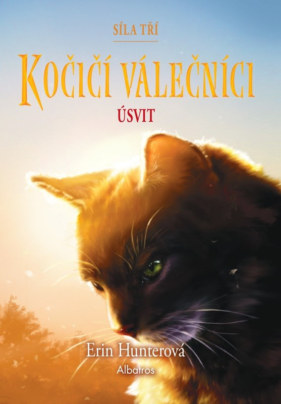
Kočičí válečníci: Úsvit
×